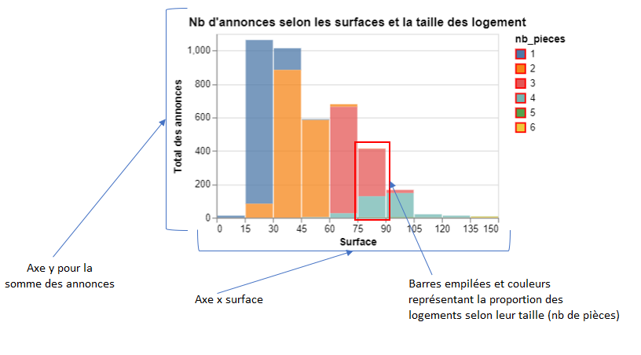
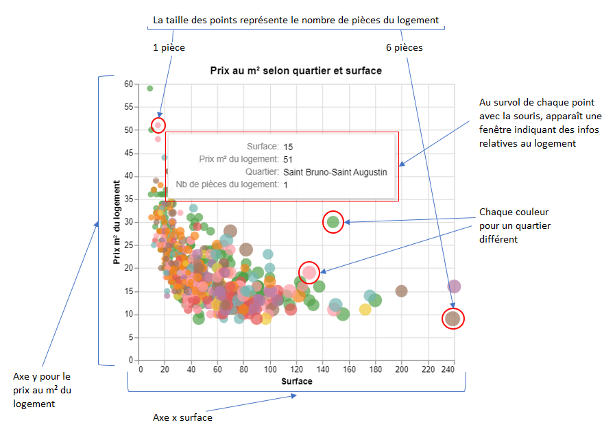

Les types de données à représenter
Sur un graphique nous pouvons représenter 3 types de données, ou variables:
*Des données quantitatives continues, tels que les prix, les surfaces, nombre d'habitants, taux de chômage ...
*Des données qualitatives, appelées aussi catégorielles, qui se distinguent en:
-Données nominales:
Telles que des noms de villes, des codes postaux, un type de logement (appartement/maison) ...
Aucun ordre particulier, intrinsèque à la donnée, ne permet de la trier ou de la classer selon un critère d'importance, de taille ...
Pour cela il faut la combiner à une donnée quantitative (nombre de logements, prix au m², nombre d'habitants...)
-Données ordinales:
Telles que le DPE (A, B, C...), la taille des logements (le nombre de pièces), les intervalles de classes (les surfaces de 0-20m², de 20-40m²...)
Un ordre particulier est attaché à la donnée, qui permet de la trier sans devoir la combiner à une donnée quantitative
*Des données temporelles (années, mois, semaines ...)
Structure d'un graphique
1.Diagramme à barres
Sur ce type de graphiques nous pouvons représenter les données sur 2 axes:
*Un axe horizontal, ou axe x, qui accueille en général une donnée qualitative
*Un axe vertical, ou axe y, qui accueille en général une donnée quantitative, détérminant la hauteur des barres
Ces axes peuvent être renversés
Deux modes de représentation pour enrichir le diagramme:
En associant la donnée qualitative initiale (axe x) à une seconde donnée qualitative, nous pouvons affiner la représentation de 2 façons:
1.Empilement:
Empilement des barres pour représenter des proportions, avec une couleur associée à chaque pile
2.Regroupement:
Mettre les barres côte à côte pour représenter des comparaisons, avec une couleur associée à chaque barre
Exemple:

Dans l'exemple ci dessus, concernant Bordeaux, nous voyons que la majorité des logements sont des 1 pièce et des 2 pièces
La majorité des 1 pièce font entre 15 et 30m²
La majorité des 2 pièces font entre 30 et 45m², un peu moins de la moitié entre 45 et 60m², et aux extrêmes une petite portion entre 15 et 30m² et au dessus de 75 m²
2.Nuage de points
Dans ce type de graphique, nous représentons aussi les données sur les 2 axes x et y, et ces données sont très souvent de type qualitatif
Chaque point correspond à une observation élémentaire (une annonce immobilière précise), et sa localisation sur les 2 axes correspond à l'intersection des 2 variables quantitatives
Deux encodages permettent d'étendre la richesse de la représentation:
1.La couleur du point (par exemple le quartier où se situe l'annonce)
2.La taille du point (par exemple la taille du logement, le nombre de pièces qu'il contient)
Les nuages de points permettent de mettre en évidence le degré de corrélation entre deux variables
La forme du nuage permet de déterminer :
-Des tendances
-Des dépendances
-Des relations positives, négatives
-Des répartitions plus ou moins homogènes des points
-Des données aberrantes ou extrêmes s'écartant des zones de concentration
Exemple:

Dans l'exemple ci dessus, concernant encore Bordeaux, nous voyons que les logements les plus chers à la location selon le prix au m² sont
des petites surfaces (quadrant 2 en haut à gauche)
A mesure que la surface augmente, la taille du logement augmente aussi, mais son loyer au m² diminue
Nous sommes sur une relation négative entre prix au m² et surface, avec une répartitions homogène des points, ainsi qu'une valeur abérante
visible en vert sous la fenêtre (30€ du m², surface entre 140 et 160€)
En observant un graphique pareil, nous comprenons à quel point les moyennes de prix au m² par ville détruisent l'information, en gommant les
disparités entre les quartiers et les logements de différentes tailles